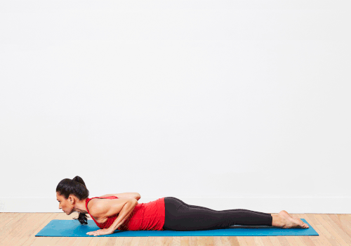
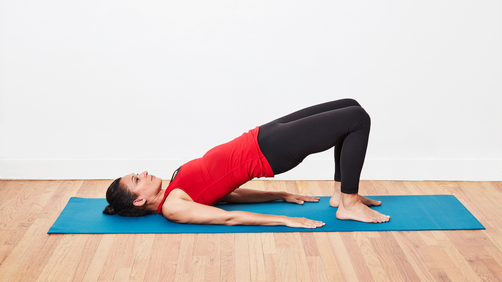
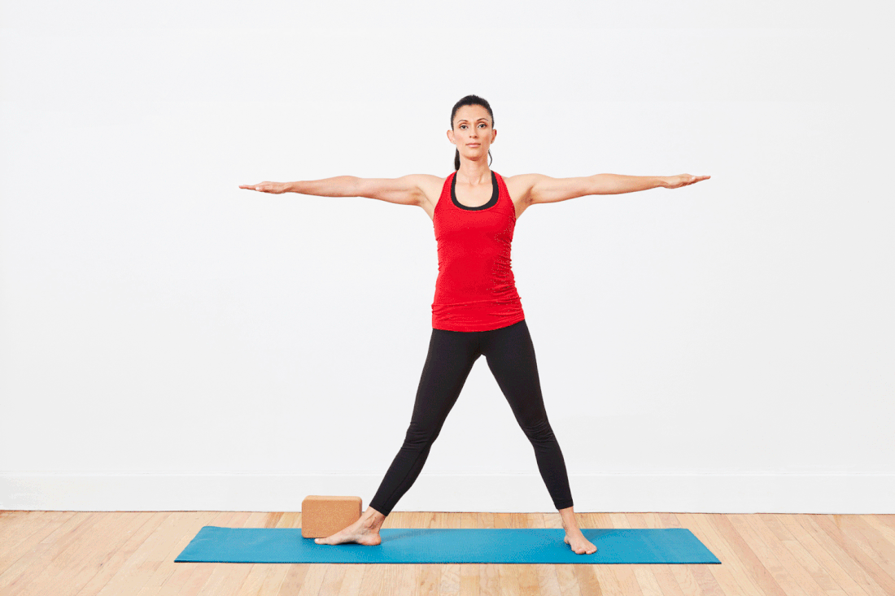
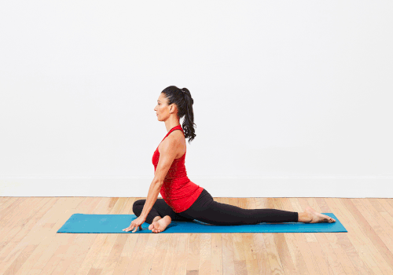
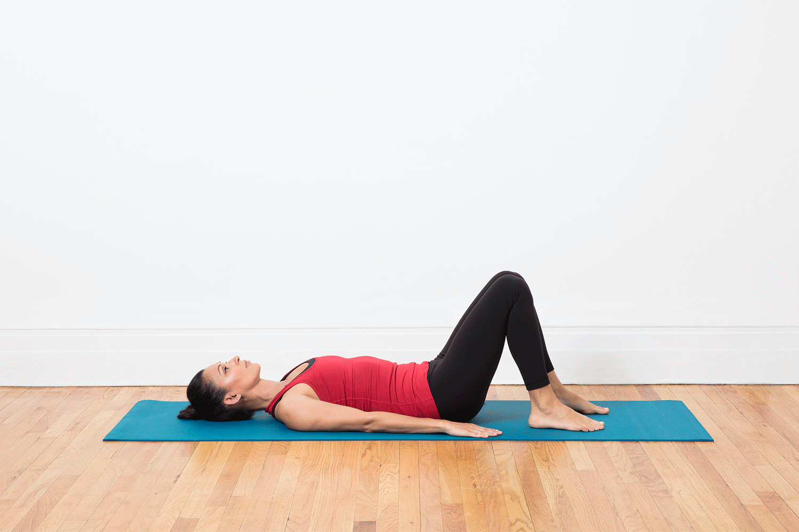

Yoga For Flexibility
These yoga poses for flexibility will help you lengthen and stretch your muscles in a safe and effective way. Do these poses in your practice regularly to see improvements.
1 Standing bend pose

- Begin standing with the feet parallel and separated hip distance apart.
- Place your hands on your hips and inhale to reach the crown of the head up toward the ceiling and find length along the spine.
- On your next exhale, begin to hinge at the hips and fold forward over the legs, bringing the torso to flow over the legs like a waterfall.
- Take as much of a bend in your knees as you need to here in order to take any tension out of the low back, and allow the head to hang heavy. Either let the arms softly hang or take a hold of opposite elbows to deepen the sensation. If it feels comfortable, you can also bring the fingertips to the ground, or press the palms against the calves to move even deeper.
- Shift your weight slightly forward into the balls of your feet and notice how that changes the sensation in your hamstrings.
- To come out of the pose, take a slight bend in the knees and place the hands on the hips. With the core engaged, inhale to find a flat back and exhale all the way up to stand.
2 Upward facing dog pose

- Lie on your stomach, with your hands next to the ribs, fingers pointing forwards, elbows tucked into your sides.
- Press the tops of your feet into the floor and engage the thighs and knees, and keep the tailbone pointing towards the heels.
- On an inhalation press into your hands and feet, straighten your arms and lift your chest and legs off the floor.
- Engage your lower belly and knit your lower ribs.
- Draw the shoulder blades onto your back and lift your breastbone.
- You can look straight ahead or up towards the ceiling.
- Stay for 1 to 5 breaths
- To come out, as you exhale, lower yourself down to the floor or lift yourself into Downward Facing Dog pose.
3 Bridge pose

- Lying on your back, place your feet flat on the floor, a comfortable distance away from the hips.
- Place your arms next to the ribcage. You can either bend your elbows 90 degrees so that your fingers are pointing to the ceiling or hold onto the outer edges of your mat.
- On an inhalation, press the back of your shoulders and your feet into the floor and lift your hips up.
- Press the inner feet down actively and keep the knees from spreading out wide, by engaging the inner thighs
- Lengthen your tailbone, slide your shoulder blades down your back and keep your neck neutral
- You can look straight ahead or up towards the ceiling.
- Stay for 1 to 5 breaths
- To come out of the pose, release the arms and roll your spine down on an out-breath
4 Camel pose

- Come onto your knees, place them hip-width apart, and then tuck your toes.
- Engage your inner thighs, draw your lower belly in and up, and roll your shoulders back
- On an inhalation, lengthen through both side waists, lift the chest up
- With the lower body stable, on an exhale start to come into your backbend keeping the chest lifted and without crunching the neck or lower back
- As you lean back, find your blocks or heels with your hands – or you can do this one side at a time by circling one arm up and behind you
- Keep your inner thighs engaged, firm the shoulder blades into the back and stay for a couple of breaths
- Use your inhalation to help you come back up, then sit on your heels with a neutral spine for a moment.
6 Traingle pose

- From a standing position with the legs 3 feet apart, turn the right toes to the right wall and the left toes slightly inwards. Inhale and press the left hips out to the left as you slide both arms to the right parallel to the floor.
- Exhale and rotate only the arms, raising the left arm up and resting the right hand against the right leg, with the palms facing forward.
- Press into the feet, pull up the knee caps, keeping the legs strong. Reach the finger tips away from each other, bringing the arms into one straight line with the shoulders stacked on top of each other. Press the left hip forward and the right hip back.
- Breathe and hold for 3-6 breaths.
- To release: inhale and reach the raised hand up towards the ceiling as you press down into the feet using the whole body to lift back.
- Repeat on the other side.
7 Pigeon pose

- Bring your right knee forward towards your right wrist. Depending on your body it may be just behind your wrist or to the outer or the inner edge of it.
- Experiment with what feels right for you, giving you a stretch on your outer hip without any discomfort in your knee. Experiment with what feels right for you, giving you a stretch on your outer hip without any discomfort in your knee.
- Slide your left leg back and point your toes, your heel is pointing up to the ceiling.
- Scissor your hips together, by drawing your legs in towards each other. Use some support under your right buttock if needed, to keep your hips level.
- As you inhale, come onto your fingertips, lengthen your spine, draw your navel in and open your chest.
- As you exhale, walk your hands forward and lower your upper body towards the floor. You can rest your forearms and forehead on the mat.
- Stay for 5 breaths or longer. On each exhalation,try to release the tension in your right hip.
- To come out of the pose, push back through the hands, lift your hips and move your leg back into all fours. Repeat on the other side.
8 Seated forward bend pose

- Sit up with the legs stretched out straight in front of you, keeping the spine erect and toes flexed toward you.
- Breathing in, raise both arms above your head and stretch up. Breathing out, bend forward from the hip joints, chin moving toward the toes. Keep the spine erect focusing on moving forwards towards the toes, rather than down towards the knees.
- Place your hands on your legs, wherever they reach, without forcing. If you can, take hold of your toes and pull on them to help you go forward.
- Breathing in, lift your head slightly and lengthen your spine.Breathing out, gently move the navel towards the knees.Repeat this movement two or three times.
- Drop your head down and breathe deeply for 20-60 seconds.
- Stretch the arms out in front of you.
- Breathing in, with the strength of your arms, come back up to the sitting position.
- Breathe out and lower the arms.
9 Eye of the needle pose

- Lie on your back with your knees bent and the soles of your feet on the floor.
- Hug your left knee into your chest.Cross the left ankle over your body and rest it on the right thigh.Let the left knee relax away from your torso.
- Lift your right foot off the floor and thread your left hand through your legs (this is the eye of the needle) so your hands meet on the back side of your right thigh. As an alternative, clasp your hands on the front side of your right shin.
- Using your hands, draw your right thigh toward your chest while exhaling. This will cause your left hip to open.
- Keep both feet flexed.
- Continue to breathe deeply and relax the left knee to open the hips.
- Repeat on the other side.
Load More